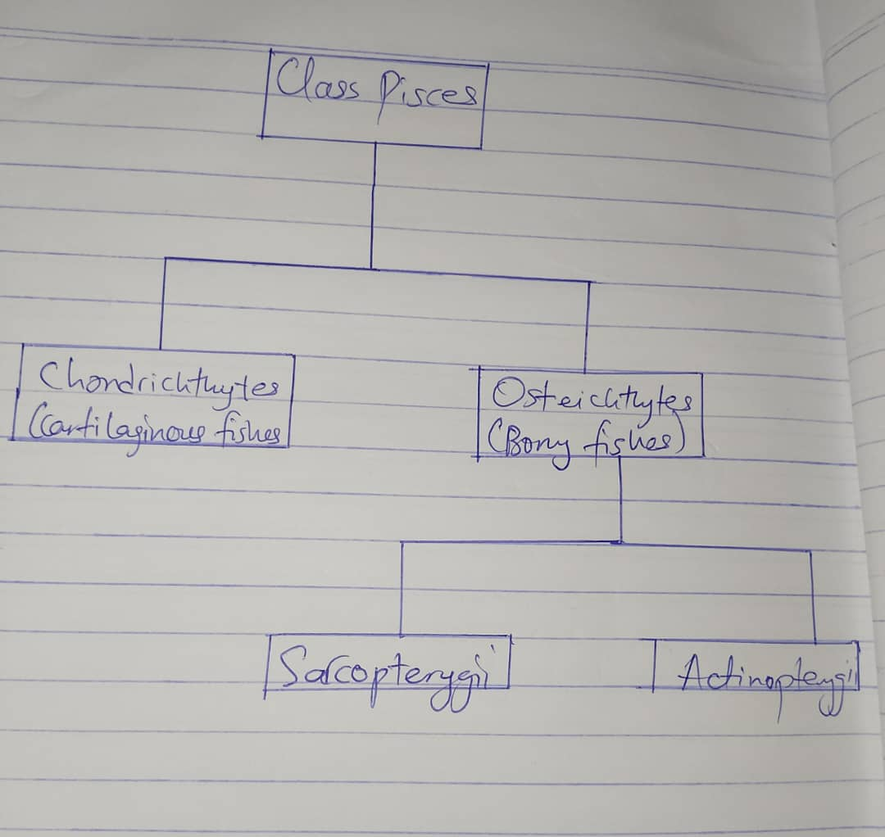

Fishes possess a true spine
A) True B) False
A) True B) False
The study of fish is called?
Class Pisces is a class of which phylum?
A) Mollusca
B) Annelida
C) Protochordata
D) Anthropoda
Mention the two living subclasses in the class Class Pisces.
Examples of chondrichthyes?
In the subclass chondrichthyes, the mouth is located;
A. Dorsally B. Ventrally C. Anteriorly D. Posteriorly
A. Dorsally B. Ventrally C. Anteriorly D. Posteriorly
In subclass chondrichthyes, the notochord is;
A. Present in embryos B. Present in young fish C. Developes gradually throughout life D. Persists through life
A. Present in embryos B. Present in young fish C. Developes gradually throughout life D. Persists through life
In male chondrichthyes, pelvic fins are modified into _____?
Osteichthytes generally possess ___ bones
A. Spongy B. Hard C. Smooth D. Soft
A. Spongy B. Hard C. Smooth D. Soft
What is a major difference between subclass chondrichthyes and osteichthytes?
Mention 3 adaptive features of bony fishes
Most chondrichthyes give birth to their young through which mode of reproduction?
The tail fin in osteichthytes is _______ symmetrical.
Let's do a quick analysis, shall we?
Class Class Pisces is divided into two subclasses:
Chondrichthyes and osteichthytes
Osteichthytes are further divided into
Sarcopterygii and
Actinopterygii
Can someone draw the tree and send?
Class Class Pisces is divided into two subclasses:
Chondrichthyes and osteichthytes
Osteichthytes are further divided into
Sarcopterygii and
Actinopterygii
Can someone draw the tree and send?

Comment